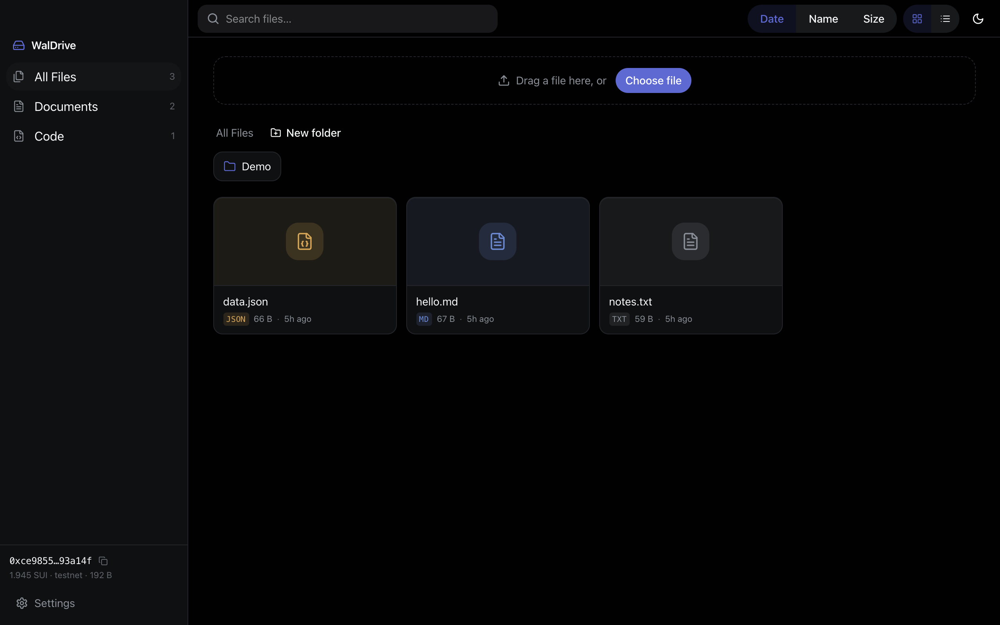
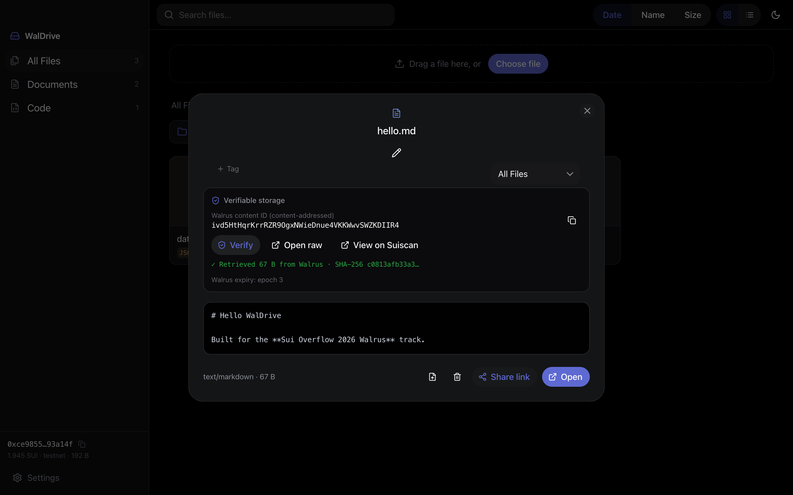

Drag a file in — the bytes land on the Walrus decentralized network, the metadata on Sui, and nothing in between. No backend, no account, no lock-in. Verifiable by anyone.

Every file in WalDrive is backed by two public facts — a content-addressed blob on Walrus and a metadata object on Sui. The app just makes them fluid.
The Walrus blob ID is the cryptographic fingerprint of your bytes. Same content, same ID — tampering is mathematically loud.
Uploads mint an on-chain Blob object sent to your wallet, plus a FileRecord with name, tags, versions and expiry — signed by your local key, in-process, no popup.
Hit Verify and WalDrive re-fetches the bytes from a public aggregator and hashes them on screen. No wallet needed — share the link and the recipient can check too.

Not a tech demo — a fluid, native-feeling desktop app where every action writes real state to Sui and Walrus.
FileRecord — name, mime, size, tags, version chain, expiryFolder — nested folders as owned objectsWalDrive ships an MCP server — the agent write-path. AI clients and scripts store artifacts and memory to the same Walrus data you manage in the console: upload_file list_files download_file get_file_info
Humans get the fluid console; agents get a clean protocol. Same chain, same blobs, same truth.